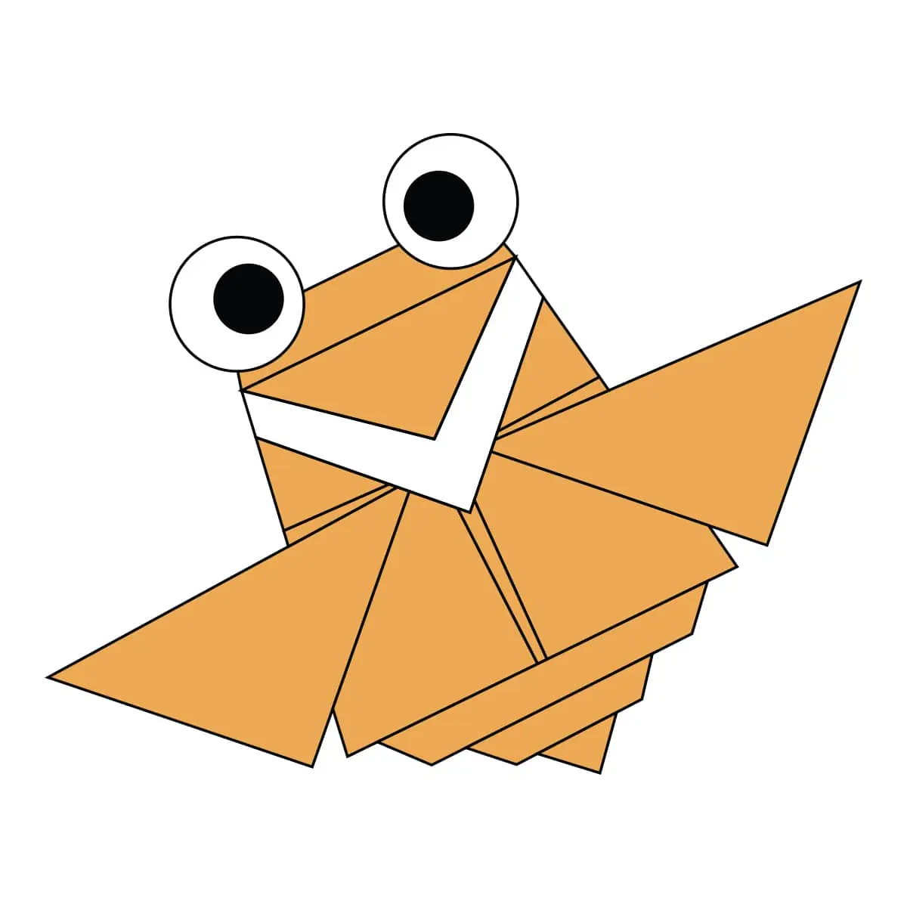

THE SHIP OF DRY LANDS
- Camel's feet are very broad preventing
them from sinking in land - They're ear are small so that they do not absorb heat
- they're mostly present in dry regions

MESSANGER OF PAST
- Pigeon were used by mughals at medivieal time
- Pigeons ar dying because of radiations
- Pigeons were not used since 17th century

ITCH RELIEVER
- Cicada just live for 2 weeks
- Cicada are native to North America
- Cicada are found in most of the regions of the world

COLOR CHANGER
- Chameleon have special skin, which can change color
- Chameleon was discoved by a expedition team
- Chameleons are found in all Evergreeen forests

CUTE GUY
- Pandas are exotic species of China
- They love to eat bamboos
- All pandas are owned by China government

SOFTY
- Teddy bears are the soft toys of bears
- 44% people have slept with teedy bear at least once
- Tallest teddy bear was 19 metre tall